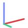
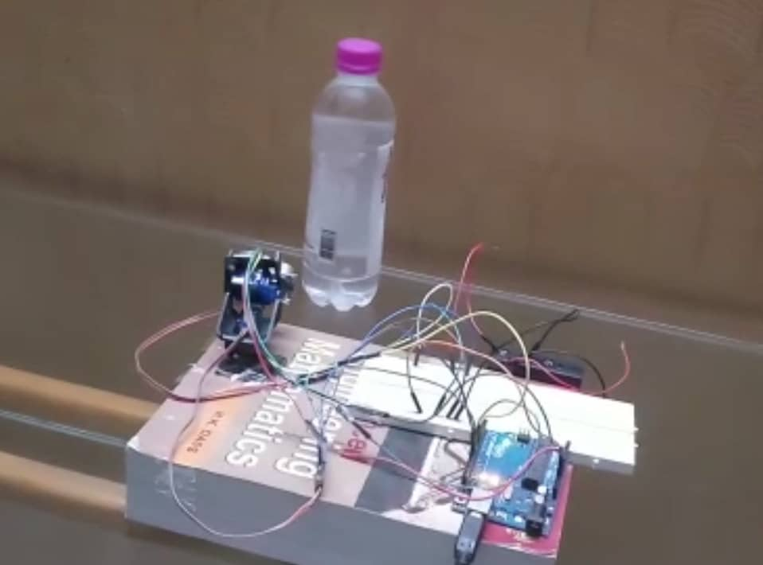
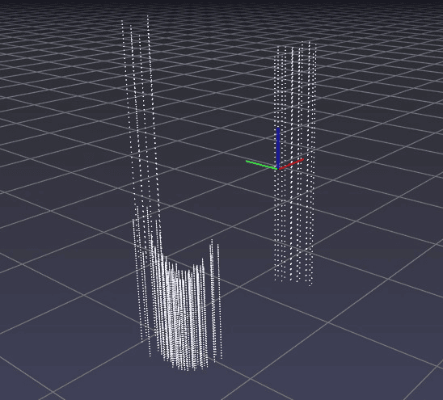

A 3D scan from one ultrasonic sensor
We put a low-cost HC-SR04 on a two-servo pan/tilt mount, swept it across a scene, and turned every distance reading into a point in space.
- HC-SR04 sensor
- MSP430G2 LaunchPad
- Python


What is in the rig
Four off-the-shelf parts and three programs.
-
HC-SR04 sensor
The cheap part, and the main reason our scans are approximate. Its beam is wide, and ultrasound diffracts more than laser light does.
- Range
- 2 cm to 4 m
- Supply
- 5 V, 15 mA
- Beam
- 15°
- Accuracy
- up to 3 mm
-
MSP430G2 LaunchPad
The main processor. It had enough pins and memory to hold the readings, and a serial link to send them to the PC.
- Chip
- MSP430G2553
- Clock
- 16 MHz
- Memory
- 16 kB flash, 512 B SRAM
- Extras
- 10-bit ADC, two 16-bit timers
-
Arduino Uno
Used for early sensor tests and for calibrating the servos.
- Chip
- ATmega328P
- Clock
- 16 MHz
- Memory
- 32 kB flash, 2 kB SRAM
- PWM
- 6 of 14 digital pins
-
Pan/tilt mount
Two micro servos in a kit. The lower one pans, the upper one tilts, and PWM pulses from the board set the angles. Its wobble limits how sharp a scan can be.
- Pan
- 360°
- Tilt
- 180°
- Control
- PWM pulses
- Servos
- two 9 g micro
Software
- Code Composer StudioFirmware for the MSP430, written in embedded C.
- Arduino IDEEarly sensor tests and servo calibration on the Uno.
- PythonTurns each distance and its two angles into x, y, z, then plots the points.